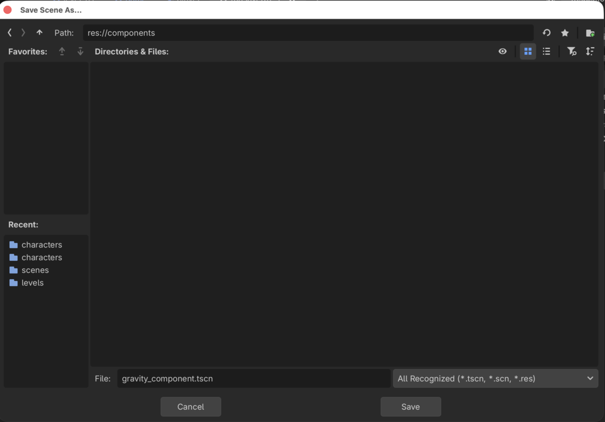
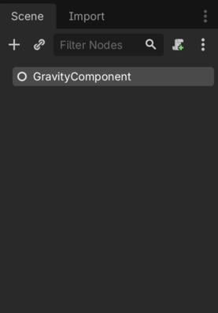
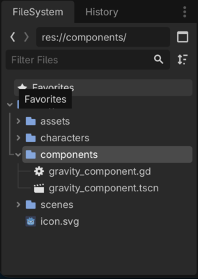
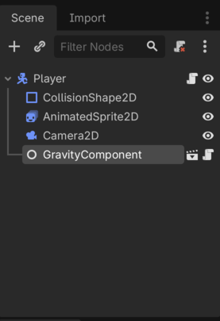
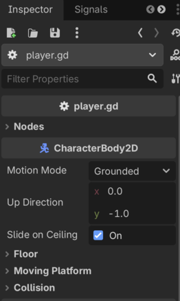
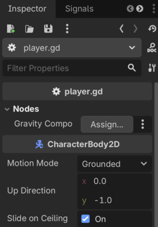
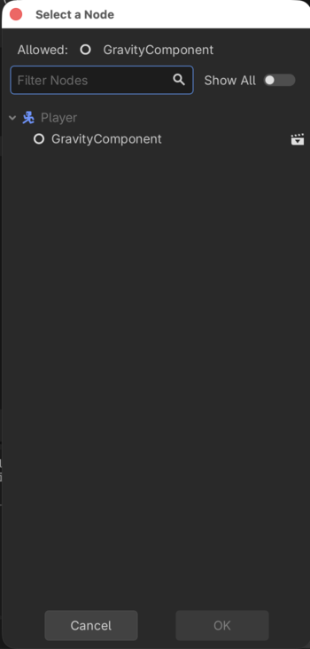
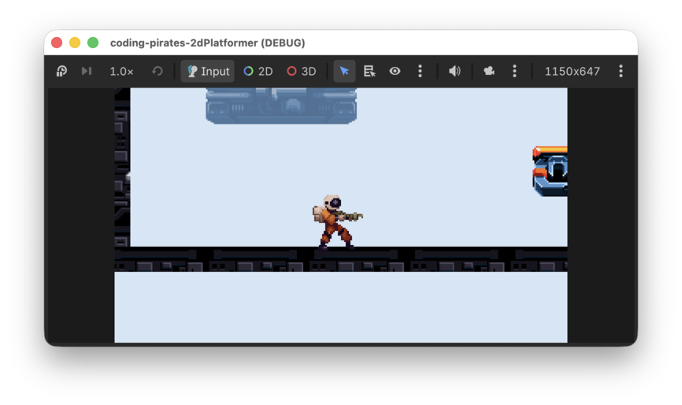

Godot 2D Platformer - level 5, komponenter og start på Player script
I level 4 fik vi lavet en "main"
Game scene som skal køre vores spil og vi fik begyndt på en
Player scene som vi efterlod svævende et lille stykke over
jorden.
I denne lektion vil vi begynde at arbejde med "komponenter" som vi
kan genbruge på flere neder som skal have de samme egenskaber. Vi vil
lave en GravityComponent og bruge den i et script som vi
tilføjer til vores Player så den kan overholde
tyngedekraften.
Lad os starte med at forstå hvad vi kan bruge komponenter til.
Introduktion til komponenter
Lad os først forestille os at vi lavede vores spil uden komponenter.
Vi har en Player som vi gerne vil:
- have til at overholde tyngdelovene
- kunne styre med tastaturet så den kan
- løbe til siderne
- hoppe
- falde når den løber ud over kanten på en platform
- have til at skyde når vi trykker på en knap på tastaturet
- have til at miste health når den bliver ramt af fjendens kugler
- have til at kunne samle healthpacks op så den får ekstra health
- skifte mellem forskellige animationer alt efter om den står stille, hopper eller går
Så...vi går i gang med at skrive et kæææææmpe langt script som gør alt det ovenstående.
Bagefter laver vi så en Walker fjende som vi gerne
vil:
- have til at overholde tyngdelovene
- have til at gå selv fra side til side
- have til at skyde når den opdager vores
Player - have til at miste health når den bliver ramt af
Playerens kugler - skifte mellem forskellige animationer alt efter om den står stille eller går
Så...nu kunne vi så skrive et kæææææmpe langt script som gør alt det ovenstående.
Men hov!
Stop lige, mange af de her ting er de samme uanset om man er
Player eller Walker er de ikke?
Hvad nu hvis vi lige tænker os om og så istedet laver noget kode som
kan genbruges uanset om man er Player eller
Walker?
Komponenter
Det vil vi prøve her, ved at skrive en masse "komponenter" som så har en specifik opgave hver.
F.eks kunne vi lave en GravityComponent hvis eneste
opgave er at finde ud af om en CharacterBody2D står på en
platform eller ej. Hvis den ikke står på en platform, så tilføjer vi
noget tyngdekraft så den falder ned mod jorden.
Det gode er at vi nu har et lille - forholdsvist - forholdsvist
simpelt script som vi kan knappe på både vores Player og
vores Walker og så forstår de pludselig begge to
tyngdelovene.
Det samme kunne være gældende for ting som:
- Animationer
- Det at kunne skyde
- Det at blive ramt
- Det at flytte sig
Hvis vi laver nogle komponenter til det, så kan vi sætte dem på vores forskellige scenes som det nu passer os.
Ulempen er at måske er en smule forvirrende at forstå til at starte med, men vi er kvikke unge mennesker der har gået til Coding Pirates i lang tid så det skal vi hurtigt fatte.
Så lad os prøve at skrive vores første komponent, nemlig en
GravityComponent
GravityComponent
Lad os tænke os om...hvad vil vi gerne have at vores
GravityComponent skal gøre?
Ja det eneste den skal gøre er vel at se om vi er i luften og hvis vi er det, så trække os ned mod jorden.
OK...vi skrev: "vi er i luften". Hvem er vi?
I det her tilfælde er det vel en CharacterBody2D som er
den node vi gerne vil bruge til både Player og
Walker.
Hvordan kan vi se om en CharacterBody2D er i luften?
Ja vi kan se det modsatte i alle tilfælde.
CharacterBody2D har en funktion der hedder
is_on_floor() og det har vist ikke noget at gøre med, om
den fyrer den af på dansegulvet :)
Du kan læse mere om den i dokumentationen
OK, så skal vi bare finde ud af hvordan vi trækker en
CharacterBody2D ned mod jorden, så vi læser videre i dokumentationen
og ser at der er noget der hedder velocity, altså
hastighed. Det er en Vector2D hvilket vi i vores tilfælde
kan oversætte til at det er en X og en Y værdi der angiver hastigheden i
en retning.
I vores tilfælde er vi kun interesserede i vertikal (op og ned) hastighed så det er Y aksen vi skal bruge.
- For at bevæge os nedad skal vi bruge et positivt tal (husk at koordinatsystemet i Godot starter med 0, 0 i øverste venstre hjærne).
- For at bevæge os opad skal vi bruge et negativt tal.
Så har vi vist alle de oplysninger vi skal bruge, så lad os prøve at skrive vores script
Opsætning af GravityComponent
Vi får brug for mange komponenter så vi laver en ny mappe i roden af vores filsystem, direkte under res://.
- Kald mappen "components"
- Inde i den mappe laver du nu en ny scene af typen
Nodesom du kalder "GravityComponent"

- Og så tilføjer du et script til din
GravityComponentsom du kalder "gravity_component" du kan godt huske hvordan ikke?
Vælg GravityComponent i venstre side af Godot vinduet og
tryk på det lille script med en grøn + knap øverst:

Det skulle nu gerne se sådan her ud

Og så er vi klar til at skrive vores script.
Script
Hvad var det vi gerne ville i den her komponent?
Hvis den CharacterBody2D vi kigger på nu, ikke er på
jorden, så træk den ned mod jorden
Så vi skal skrive en funktion der:
Lad os starte med en funktions definition.
I din gravity_component.gd fil skriver du:
extends Node
func handle_gravity(body: CharacterBody2D, delta: float) -> void:Altså, en funktion der:
- hedder
handle_gravity - tager en parameter kaldet
bodyaf typenCharacterBody2Dog en parameter kaldetdeltaaf typefloat - ikke returnerer nogen værdi
Hvad skal vi bruge delta til? Den bruger vi for at sikre
at hastigheden stiger støt, ligesom hvis du selv hoppede ud fra et højt
sted (du skal ikke prøve!).
Det var step 1
Videre
extends Node
func handle_gravity(body: CharacterBody2D, delta: float) -> void:
if not body.is_on_floor():
Det var step 2
Videre
extends Node
func handle_gravity(body: CharacterBody2D, delta: float) -> void:
if not body.is_on_floor():
body.velocity.y += ???Hmmm...hvad skal vores gravity være? Lad os lave en varibel til det, så man kan styre det udefra, ganske som vi gjorde i vores 2D skydespil. Vores script ser nu sådan her ud:
extends Node
@export_subgroup("Settings")
@export var gravity: float = 1000
func handle_gravity(body: CharacterBody2D, delta: float) -> void:
if not body.is_on_floor():
body.velocity.y += gravity * deltaBemærk at vi ganger gravity med delta for
at sikre at vores hastighed stiger støt
Det var step 3
Og med det skulle vores script virke. Lad os straks tilføje det til
vores Player.
Tilføj
GravityComponent til Player
Første skridt er vel at lave et script til vores Player,
så det gør vi, du kan godt huske hvordan ikke?
Vælg Player i venstre side af Godot vinduet og tryk på
det lille script med en grøn + knap øverst:
Kald scriptet player.gd og gem det sammen med
Player.tscn i "characters" mappen.
Tilføj
GravityComponent til vores Player script.
Vi skal have lavet en @export variabel af typen
GravityComponent på vores Player script,
hvordan katten gør vi mon det?
I Godot kan man give et script en type, så hvis vi nu gør det med
vores GravityComponent så kan vi nemt oprette den på vores
Player.
Derfor:
- Tilbage på
GravityComponent - Tilføj
class_name GravityComponentsom øverste linie så dit script ser sådan her ud:
class_name GravityComponent
extends Node
@export_subgroup("Settings")
@export var gravity: float = 1000
func handle_gravity(body: CharacterBody2D, delta: float) -> void:
if not body.is_on_floor():
body.velocity.y += gravity * delta- Tilbage i dit
player.gdkan du nu tilføje en referance til dit script sådan her:
extends CharacterBody2D
@export_subgroup("Nodes")
@export var gravity_component: GravityComponent- Og så kan du binde din
GravityComponentpå dinPlayeri 2D mode ved at vælgePlayeri venstre side og så vælge "Instantiate child scene" ganske som vi gjorde da vil tilføjedeLevel01ogPlayertilGame. - Vælg
gravity_component.tscn
Det skulle gerne se sådan her ud nu:

Nu er vores GravityComponent en child scene til vores
Player men vi er nødt til lige at binde dem sammen en gang
mere så vores @export gravity_component: GravityComponent
virker inde i scriptet.
Derfor:
- Klik på
Playerrod scenen i venstre side af Godot vinduet - I "Inspectoren" i højre side kan du nu se en ny kategori der hedder
Nodes, præcis som vi skrev i vores
Playerscript (export_subgroup)

- Fold den ud ved at trykke på pilen til venstre for "Nodes", nu kan du se at der er en "Gravity Component" værdi som vi mangler at assigne så det gør vi.

- Tryk på "Assign"
- Eftersom vi har tilføjet "GravityComponent" som en child instance
skulle vi nu få mulighed for at assigne "GravityComponent" til værdien
af typen
GravityComponent

- Vælg "GravityComponent" og tryk på "OK"
Og nu er alting bundet sammen så vi har fortalt vores
Player at vi gerne vil bruge en
GravityComponent. Lidt besværligt men til gengæld er vi
sikre på at tingene er bundet korrekt sammen og at vi ikke har glemt
noget.
Brug
GravityComponent sammen med Player
Nu bliver det spændende. Efter vores hårde arbejde burde det nu være
nemt at få vores Player til at overholde tyngdeloven.
Vi skal:
Lad os komme i gang.
Physics lifecycle
Tænk tilbage på vores 2D space shooter. Der brugte vi Godots
process funktion til at:
- lytte på tastaturindput
- flytte vores rumskib
Og så videre.
Det vil vi også gøre her, men samtidig, fordi vi bruger fysiske
egenskaber, skal vi bruge en anden livscyklusmetode kaldet
_physics_process. Som der står i dokumentationen:
Called once on each physics tick, and allows Nodes to synchronize their logic with physics ticks. delta is the logical time between physics ticks in seconds.
Så, den vil vi gerne bruge i vores Player:
func _physics_process(delta: float) -> void:Det var trin 1
Og hvad vil vi så? Jamen vi har jo lavet en fin funktion i vores
GravityComponent som gerne skulle gøre alt arbejdet for
os.
Så lad os kalde den:
extends CharacterBody2D
@export_subgroup("Nodes")
@export var gravity_component: GravityComponent
func _physics_process(delta: float) -> void:
gravity_component.handle_gravity(self, delta)Det var trin 2
Jamen burde det så ikke virke nu? Lad os da prøve! Kør dit spil?
Næh...vores Player svæver stadig rundt...så'noed
fis!
Nå...vi læser lidt videre i dokumentationen om physics i Godot og finder det her
When moving a CharacterBody2D, you should not set its position property directly. Instead, you use the move_and_collide() or move_and_slide() methods. These methods move the body along a given vector and detect collisions.
Aha! Så altså, for at flytte vores CharacterBody2D skal
vi kalde move_and_slide() tilsidst i vores
_physics_process eller sker der ingenting.
Tilføj move_and_slide() til dit script så det ser sådan
her ud:
extends CharacterBody2D
@export_subgroup("Nodes")
@export var gravity_component: GravityComponent
func _physics_process(delta: float) -> void:
gravity_component.handle_gravity(self, delta)
move_and_slide()Og så kør dit spil igen.
Tada! Nu falder vores Player ned og står på en
platform.

Sådan!
Nu har vi taget hul på at bruge komponenter til vores
CharacterBody2D scenes. Det kan måske virke lidt besværligt
men når vi kommer i gang med at lave flere og især når vi nemt kan bruge
vores komponenter sammen med en Walker f.eks. bliver det
virkelig brugbart.
I næste level vil vi arbejde videre med
komponenter så vi kan få vores Player til at flytte sig. Vi
ses